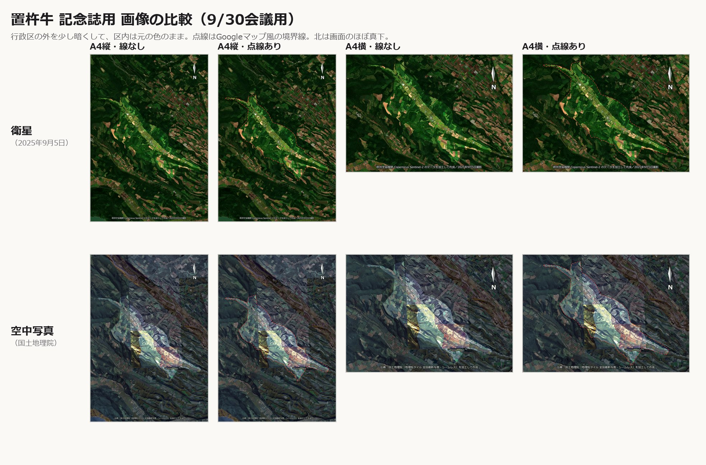

置杵牛 開拓120周年 記念誌
いただいた①②③への対応です。向きは前回と同じ（北が画面のほぼ真下）、A4原寸・300dpiです。
このページは公開していません。どこからもリンクしておらず、検索にも出ません。記念誌ができましたら削除します。
ぜんぶまとめてダウンロード（ZIP・30MB）
上段が衛星、下段が空中写真。会議で並べて比べる用です。
緑の色付けをやめ、置杵牛の行政区の外だけを少し暗くしました。区内は元の色のままです。境界の点線（Googleマップ風の赤い破線）は、あり・なしの両方を用意しました。
同じ向き・同じ処理で、衛星を空中写真に置き換えました。細かさは衛星よりずっと上です（元が約1.7m／画素。衛星は10m／画素）。
ひとつ正直にお伝えします。置杵牛のあたりの空中写真は、撮影した年も季節も違う写真のつなぎ合わせです（国土地理院の「全国最新写真」は、場所ごとに一番新しい写真をつないで作られています）。そのため谷の中に、秋の金色、夏の緑、白っぽく写った区画などが四角く並びます。明るさの幅は整えましたが、継ぎ目には手を入れていません。色を合わせることはある程度できますが、季節の違い（木の色や畑の状態）までは消せません。
使い分けの案：表紙や大扉のような全景は衛星、本文で集落のあたりを大きく見せるなら空中写真（1枚の写真に収まる範囲なら継ぎ目が出ません）。
e-Stat の画面からは辿りにくいのですが、次のアドレスから直接ダウンロードできます（美瑛町ぶん・Shapefile・緯度経度）。
https://www.e-stat.go.jp/gis/statmap-search/data?dlserveyId=A002005212020&code=01459&coordSys=1&format=shape&downloadType=5
画面から行く場合は、e-Stat → 地図（統計GIS）→ 境界データダウンロード → 小地域 → 国勢調査 → 2020年 → 小地域（町丁・字等別）→ 世界測地系緯度経度・Shapefile → 北海道 → 美瑛町、の順です。
r2ka01459.shp ほか。美瑛町の字がすべて入っていて、置杵牛は S_NAME が「字置杵牛」（KEY_CODE 014590320）の1つです。.shp を指定します。文字化けしたら、レイヤのプロパティ → ソース → データソースのエンコーディングを「Shift_JIS」にしてください。"S_NAME" = '字置杵牛' と入れます。置杵牛だけを切り出したファイルも置きました。そのままQGISで開けます。
置杵牛_行政区.geojson出典の例：「令和2年国勢調査 町丁・字等別境界データ」（総務省統計局）を加工して作成
国土地理院には1961〜1969年ごろの空中写真もあり、置杵牛全体が写っています（白黒）。QGISでは「XYZ Tiles」に次のURLを登録すると重ねられます。
https://cyberjapandata.gsi.go.jp/xyz/ort_old10/{z}/{x}/{y}.png
{kind=link}
{kind=link}
{kind=link}
{kind=link}
{kind=link}
{kind=link}
{kind=link}
{kind=link}